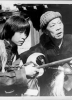

Also known as:Du bi quan wang yong zhan chu men jiu zi (original title)
Country:TW, 76 minutes
Spoken languages:Mandarin
Genres:Action, Drama
Director(s):Teng-Hung Hsu
Writer(s):Ching-Kang Yao, Jimmy Wang Yu
Video Codec:Unknown
Number: 317


Certification:
Storyline:
Watch WANG YU as a one-armed savior battling the local goons in this martial arts classic. He has some rather amazing moves up his sleeve.
Cast: 


Medium: Original DVD,
Loaned: No
Aspect ratio: Unknown